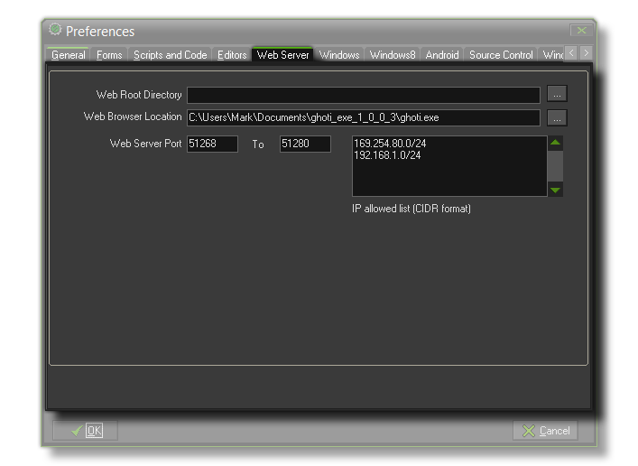

Server Preferences
The section details the web server preferences tab.
 Here you can set up the web server that GameMaker:Studio is going to use. The available options are :
- Web Root Directory : Normally you can just leave this blank but if you get any errors you can use this to point the server to a specific place on your computer.
- Web Browser Location : This is where you must select the default browser for testing your GameMaker:Studio Html5 project.
- Web Server Port : This is set to 51268 to 51280 by default. There is no need to change this unless these ports are already in use.
- IP Allowed List : Enter your local IP Address here as seen in this example: 192.168.1.1/24. You can also add other device IP addresses as necessary.
If you are not sure of your IP address, then you can find it by following these instructions :
- Hold down the Windows key?and press R?on the keyboard to bring up the "Run" window
- Type cmd?and hit the enter key to bring up a command line prompt
- Type ipconfig?and then hit enter
- Find where it says ipv4 and your IP address is the following number
The Micro Web Server
 The Micro Web Server is a small program that GameMaker:Studio uses for HTML5 games and for connecting remotely to other computers and devices. It shows the currently connected
IP addresses as well as a log of events for each address, and also has the permitted IPs that you entered in to the Preferences, above.
The Micro Web Server is a small program that GameMaker:Studio uses for HTML5 games and for connecting remotely to other computers and devices. It shows the currently connected
IP addresses as well as a log of events for each address, and also has the permitted IPs that you entered in to the Preferences, above.
Note that you cannot change any of the information displayed here in the Micro Web Server itself, except for the network speed. This has a slider (and accepts direct keyboard input too) which
can be used to "throttle back" the server connection speed and so simulate poor or limited network conditions, which can be very useful for testing HTML5 games.